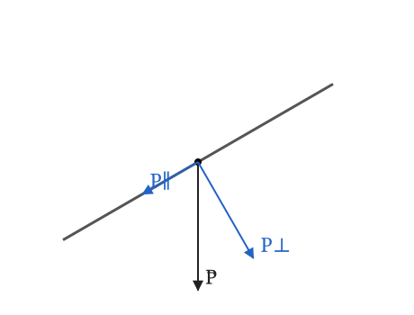
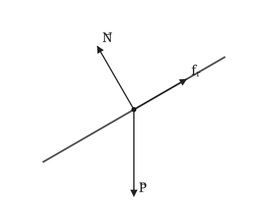
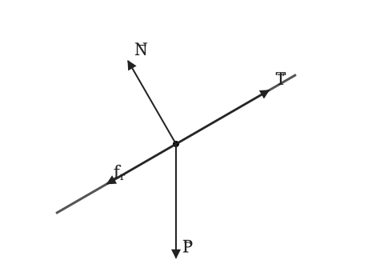

Tema 0 · Soluciones
Ejercicio 1
Indica si las siguientes afirmaciones son verdaderas o falsas, razonando brevemente tu respuesta:
El módulo de un vector es siempre un número real mayor o igual que cero.
El módulo de la suma de dos vectores es siempre estrictamente igual a la suma de sus módulos.
Al multiplicar un vector por un escalar negativo, el vector resultante mantiene su dirección pero invierte su sentido.
El producto escalar de dos vectores perpendiculares u ortogonales entre sí es siempre igual a uno.
La fuerza \(\vec{F} = m\vec{a}\) tiene siempre la misma dirección y sentido que la aceleración \(\vec{a}\) (siendo \(m\) la masa).
La energía cinética \(E_c = \frac{1}{2}mv^2\) es una magnitud vectorial debido a la presencia de la velocidad al cuadrado.
Al multiplicar la carga eléctrica \(q\) (que puede ser positiva o negativa) por el campo eléctrico \(\vec{E}\), la fuerza eléctrica \(\vec{F} = q\vec{E}\) puede invertir su sentido si la carga es negativa.
Resolución
Verdadera. El módulo es una longitud: \(|\vec a|\geq 0\). Solo es cero para el vector nulo.
Falsa. Se cumple \(|\vec a+\vec b|\leq |\vec a|+|\vec b|\). Por ejemplo, si \(\vec b=-\vec a\neq\vec 0\), la suma tiene módulo cero. Para dos vectores no nulos, la igualdad se da si tienen la misma dirección y sentido.
Verdadera para un vector no nulo: un escalar negativo invierte el sentido y conserva la dirección. El vector nulo carece de dirección y sentido definidos.
Falsa. \(\vec a\cdot\vec b=|\vec a||\vec b|\cos90^\circ=0\).
Verdadera para \(m>0\) y \(\vec a\neq\vec0\): multiplicar por una masa positiva conserva dirección y sentido. Si \(\vec a=\vec0\), también \(\vec F=\vec0\).
Falsa. \(v^2=\vec v\cdot\vec v\) es un escalar; por tanto, la energía cinética también lo es.
Verdadera. Para \(q<0\), la fuerza tiene sentido opuesto al campo eléctrico; para \(q>0\), tiene el mismo sentido.
Ejercicio 2
Halla las unidades en el Sistema Internacional (S.I.) y la ecuación de dimensiones de la constante de gravitación universal (\(G\)), sabiendo que la ley de gravitación universal viene dada por la expresión: \[F = G \cdot \frac{M \cdot m}{r^2}\] (Donde \(F\) es fuerza, \(M\) y \(m\) son masas, y \(r\) es la distancia entre ellas).
Resolución
Despejamos \(G\) y sustituimos las dimensiones de fuerza, distancia y masa: \[G=\frac{Fr^2}{Mm},\qquad [G]=\frac{(\mathsf M\mathsf L\mathsf T^{-2})\mathsf L^2}{\mathsf M^2} =\boxed{\mathsf M^{-1}\mathsf L^3\mathsf T^{-2}}.\] Su unidad en el S.I. es \(\boxed{\mathrm{N\,m^2\,kg^{-2}}=\mathrm{m^3\,kg^{-1}\,s^{-2}}}\). Aquí \(\mathsf M\), \(\mathsf L\) y \(\mathsf T\) representan las dimensiones de masa, longitud y tiempo.
Ejercicio 3
Halla las unidades en el Sistema Internacional (S.I.) y la ecuación de dimensiones de la constante recuperadora o elástica de un muelle (\(k\)), utilizando la ley de Hooke: \[F = -k \cdot x\] (Donde \(F\) es la fuerza aplicada y \(x\) es el alargamiento o desplazamiento del muelle).
Resolución
El signo menos expresa el carácter recuperador de la fuerza del muelle y no afecta a las dimensiones. En módulos, \(k=|F|/|x|\): \[[k]=\frac{\mathsf M\mathsf L\mathsf T^{-2}}{\mathsf L} =\boxed{\mathsf M\mathsf T^{-2}}.\] La unidad del S.I. es \(\boxed{\mathrm{N\,m^{-1}}=\mathrm{kg\,s^{-2}}}\). En la expresión \(F=-kx\), \(F\) representa la componente de la fuerza elástica ejercida por el muelle.
Ejercicio 4
Comprueba si la siguiente fórmula de la velocidad orbital de un satélite es dimensionalmente correcta: \[v = \sqrt{\frac{G \cdot M}{r}}\] (Donde \(v\) es velocidad, \(G\) es la constante de gravitación universal, \(M\) es masa y \(r\) es el radio de la órbita o distancia).
Resolución
Utilizando las dimensiones de \(G\) obtenidas en el ejercicio 2: \[\left[\sqrt{\frac{GM}{r}}\right] =\left(\frac{\mathsf M^{-1}\mathsf L^3\mathsf T^{-2}\,\mathsf M}{\mathsf L}\right)^{1/2} =(\mathsf L^2\mathsf T^{-2})^{1/2}=\mathsf L\mathsf T^{-1}=[v].\] La fórmula es dimensionalmente correcta, pues ambos miembros tienen dimensiones de velocidad.
Ejercicio 5
Un dron experimenta una velocidad cuyo vector tiene un módulo \(v = 20\text{ m/s}\) y forma un ángulo de \(150^\circ\) con el semieje positivo del eje \(x\).
Calcula sus componentes cartesianas \(v_x\) e \(v_y\).
Razona el signo de cada componente según la posición del vector en el plano.
Resolución
a) Proyectamos la velocidad sobre los ejes: \[\begin{aligned} v_x&=v\cos150^\circ=20\left(-\frac{\sqrt3}{2}\right)=\boxed{-17{,}32\text{ m/s}},\\ v_y&=v\sin150^\circ=20\left(\frac12\right)=\boxed{10\text{ m/s}}. \end{aligned}\] b) El vector está en el segundo cuadrante: apunta hacia la izquierda (\(v_x<0\)) y hacia arriba (\(v_y>0\)).
Ejercicio 6
El vector de posición inicial de una partícula viene dado por \(\vec{r} = (-3\hat{i} - 4\hat{j})\text{ m}\).
Calcula su módulo.
Determina el ángulo \(\alpha\) que forma con el semieje positivo del eje \(x\) teniendo en cuenta su cuadrante.
Resolución
a) El módulo es \[|\vec r|=\sqrt{(-3)^2+(-4)^2}=\boxed{5\text{ m}}.\] b) Las dos componentes son negativas, por lo que el vector está en el tercer cuadrante. Su ángulo de referencia es \(\arctan(4/3)=53{,}13^\circ\). Medido en sentido antihorario desde el semieje positivo de \(x\): \[\boxed{\alpha=180^\circ+53{,}13^\circ=233{,}13^\circ}.\]
Ejercicio 7
Se aplica una fuerza sobre un punto material, \(\vec{F} = (3\hat{i} - 4\hat{j})\text{ N}\) y se produce el siguiente desplazamiento \(\vec{\Delta r} = (2\hat{i} + 5\hat{j})\text{ m}\):
Calcula el trabajo.
Halla el ángulo \(\theta\) que forman la fuerza y el desplazamiento.
Resolución
a) El trabajo se calcula mediante el producto escalar de la fuerza y el desplazamiento: \[W=\vec F\cdot\Delta\vec r=3\cdot2+(-4)\cdot5=\boxed{-14\text{ J}}.\] b) Los módulos son \(|\vec F|=5\text{ N}\) y \(|\Delta\vec r|=\sqrt{29}\text{ m}\). Por tanto, \[\cos\theta=\frac{\vec F\cdot\Delta\vec r}{|\vec F|\,|\Delta\vec r|} =\frac{-14}{5\sqrt{29}},\qquad \boxed{\theta=121{,}33^\circ}.\] El ángulo es obtuso, coherentemente con el signo negativo del producto escalar.
Ejercicio 8
Una fuerza constante \(\vec{F} = (10\hat{i} + 15\hat{j})\text{ N}\) actúa sobre un cuerpo que se desplaza según el vector \(\vec{r} = (4\hat{i} - 2\hat{j})\text{ m}\). Calcula el trabajo mecánico \(W\) realizado por dicha fuerza y razona su carácter escalar.
Resolución
El trabajo de una fuerza constante es el producto escalar de la fuerza por el desplazamiento: \[W=\vec F\cdot\vec r=10\cdot4+15\cdot(-2)=40-30=\boxed{10\text{ J}}.\] Es una magnitud escalar porque resulta de un producto escalar: tiene valor y signo, pero no dirección ni sentido. Es positivo porque la fuerza tiene una componente a favor del desplazamiento.
Ejercicio 9
Un bloque de masa \(m = 5\text{ kg}\) se encuentra sobre un plano inclinado \(30^\circ\) respecto a la horizontal. Toma \(g = 9{,}8\text{ m/s}^2\).
Representa el peso y calcula sus componentes paralela y perpendicular al plano.
Indica el sentido de cada componente y comprueba que son compatibles con el módulo del peso.
Resolución
a) El peso es vertical y apunta hacia abajo. Elegimos \(x\) paralelo al plano, positivo hacia el descenso, e \(y\) perpendicular al plano, positivo hacia fuera.

El módulo del peso es \(P=mg=5\cdot9{,}8=49\text{ N}\). Sus componentes son \[P_x=mg\sin30^\circ=\boxed{24{,}50\text{ N}},\qquad P_y=-mg\cos30^\circ=\boxed{-42{,}44\text{ N}}.\] b) La componente paralela apunta hacia abajo del plano y la perpendicular hacia su interior. Usando los valores sin redondear: \[\sqrt{P_x^2+P_y^2}=mg\sqrt{\sin^230^\circ+\cos^230^\circ}=\boxed{49\text{ N}}.\]Ejercicio 10
Una caja de masa \(m = 12\text{ kg}\) está apoyada sobre una rampa inclinada \(25^\circ\) respecto a la horizontal. Toma \(g = 9{,}8\text{ m/s}^2\).
Elige unos ejes adecuados y calcula las componentes del peso, indicando sus signos según los ejes elegidos.
¿Cómo cambiarían los módulos de estas componentes si aumentase la inclinación de la rampa? Razona la respuesta.
Resolución
a) Elegimos \(x\) paralelo a la rampa y positivo hacia arriba, e \(y\) perpendicular y positivo hacia fuera. El peso vale \(P=12\cdot9{,}8=117{,}6\text{ N}\): \[P_x=-mg\sin25^\circ=\boxed{-49{,}70\text{ N}},\qquad P_y=-mg\cos25^\circ=\boxed{-106{,}58\text{ N}}.\] Ambas componentes son negativas: el peso apunta hacia abajo de la rampa y hacia su interior.
b) Para inclinaciones entre \(0^\circ\) y \(90^\circ\), al aumentar el ángulo aumenta \(\sin\alpha\) y disminuye \(\cos\alpha\). Por ello, aumenta \(|P_x|\) y disminuye \(|P_y|\), mientras que el módulo del peso permanece constante.
Ejercicio 11
Dos puntos materiales, de masas \(m_1 = 30\,\text{kg}\) y \(m_2 = 20\,\text{kg}\), se encuentran situados en los puntos \[A=(4,0)\,\text{m}, \qquad B=(0,3)\,\text{m}.\]
Calcula el vector unitario en la dirección de la recta que une \(A\) con \(B\) y con sentido desde \(A\) hacia \(B\), \(\hat{u}_{AB}\).
Calcula el vector unitario en la misma dirección, pero con sentido desde \(B\) hacia \(A\), \(\hat{u}_{BA}\).
Comprueba que ambos vectores tienen módulo unidad y explica qué relación existe entre ellos.
Resolución
a) Calculamos primero el vector que va desde \(A\) hasta \(B\): \[\vec r_{AB}=\vec r_B-\vec r_A =(0,3)-(4,0)=(-4,3)\,\text{m}.\] Su módulo es \[|\vec r_{AB}|=\sqrt{(-4)^2+3^2} =\sqrt{25}=\boxed{5\,\text{m}}.\] Por tanto, el vector unitario en el sentido \(A\rightarrow B\) es \[\hat u_{AB} =\frac{\vec r_{AB}}{|\vec r_{AB}|} =\left(-\frac45,\frac35\right) =\boxed{-0{,}8\,\hat i+0{,}6\,\hat j}.\]
b) Para el sentido contrario: \[\vec r_{BA}=\vec r_A-\vec r_B =(4,0)-(0,3)=(4,-3)\,\text{m}.\] Su módulo también vale \[|\vec r_{BA}|=\sqrt{4^2+(-3)^2} =\boxed{5\,\text{m}}.\] Así, \[\hat u_{BA} =\frac{\vec r_{BA}}{|\vec r_{BA}|} =\left(\frac45,-\frac35\right) =\boxed{0{,}8\,\hat i-0{,}6\,\hat j}.\]
c) Comprobamos que ambos son vectores unitarios: \[|\hat u_{AB}|=\sqrt{(-0{,}8)^2+(0{,}6)^2} =\sqrt{1}=\boxed{1},\] \[|\hat u_{BA}|=\sqrt{(0{,}8)^2+(-0{,}6)^2} =\sqrt{1}=\boxed{1}.\] Además, \[\boxed{\hat u_{BA}=-\hat u_{AB}}.\] Por tanto, tienen la misma dirección y módulo, pero sentidos opuestos. Las masas \(m_1\) y \(m_2\) no intervienen en este cálculo, ya que los vectores unitarios dependen únicamente de la posición relativa de los puntos \(A\) y \(B\).
Ejercicio 12
Un bloque de masa \(m = 10\text{ kg}\) desciende deslizándose por un plano inclinado \(30^\circ\) respecto a la horizontal y recorre una distancia de \(4\text{ m}\) a lo largo del plano. El coeficiente de rozamiento cinético es \(\mu_c = 0{,}20\). Toma \(g = 9{,}8\text{ m/s}^2\) y desprecia la resistencia del aire.
Representa las fuerzas que actúan sobre el bloque y calcula el trabajo realizado por cada una durante el descenso.
Determina el trabajo total e interpreta su signo en relación con el cambio de rapidez del bloque.
Resolución
a) Actúan el peso, vertical hacia abajo; la normal, perpendicular al plano hacia fuera; y el rozamiento, hacia arriba del plano, opuesto al deslizamiento.

No hay aceleración perpendicular al plano, de modo que \[N=mg\cos30^\circ=84{,}87\text{ N},\qquad f_r=\mu_cN=16{,}97\text{ N}.\] El peso forma \(60^\circ\) con el desplazamiento, la normal \(90^\circ\) y el rozamiento \(180^\circ\): \[\begin{aligned} W_P&=mgd\cos60^\circ=10\cdot9{,}8\cdot4\cdot\sin30^\circ=\boxed{196\text{ J}},\\ W_N&=Nd\cos90^\circ=\boxed{0\text{ J}},\\ W_r&=f_rd\cos180^\circ=-\mu_cmg\cos30^\circ\cdot4=\boxed{-67{,}90\text{ J}}. \end{aligned}\] b) Sumando los trabajos: \[W_{\mathrm{total}}=196+0-67{,}90=\boxed{128{,}10\text{ J}}.\] Por el teorema trabajo–energía, \(W_{\mathrm{total}}=\Delta E_c\). Al ser positivo, aumenta la energía cinética y, por tanto, la rapidez del bloque.Ejercicio 13
Una caja de masa \(m = 8\text{ kg}\) asciende deslizándose por una rampa inclinada \(20^\circ\) respecto a la horizontal hasta ganar una altura vertical de \(2\text{ m}\). Una cuerda paralela a la rampa tira de ella hacia arriba con una tensión constante de \(50\text{ N}\). El coeficiente de rozamiento cinético es \(\mu_c = 0{,}15\). Toma \(g = 9{,}8\text{ m/s}^2\) y desprecia la resistencia del aire.
Representa las fuerzas que actúan sobre la caja y calcula el trabajo realizado por cada una durante el ascenso.
Determina el trabajo total e indica si la rapidez de la caja aumenta o disminuye.
Compara el signo del trabajo del peso y del rozamiento con los del ejercicio anterior y explica las diferencias o coincidencias.
Resolución
a) Actúan el peso, la normal, la tensión hacia arriba de la rampa y el rozamiento hacia abajo de ella.

La altura ganada es \(h=2\text{ m}\). El recorrido sobre la rampa es \[d=\frac{h}{\sin20^\circ}=5{,}8476\text{ m}.\] Como la tensión es paralela a la rampa, \[N=mg\cos20^\circ=73{,}67\text{ N},\qquad f_r=\mu_cN=11{,}05\text{ N}.\] La tensión forma \(0^\circ\) con el desplazamiento, el peso \(110^\circ\), la normal \(90^\circ\) y el rozamiento \(180^\circ\): \[\begin{aligned} W_T&=Td=50\,\frac{2}{\sin20^\circ}=\boxed{292{,}38\text{ J}},\\ W_P&=mgd\cos110^\circ=-mgh=-8\cdot9{,}8\cdot2=\boxed{-156{,}80\text{ J}},\\ W_N&=Nd\cos90^\circ=\boxed{0\text{ J}},\\ W_r&=-f_rd=-\mu_cmg\cos20^\circ\,\frac{2}{\sin20^\circ}=\boxed{-64{,}62\text{ J}}. \end{aligned}\] b) El trabajo total es \[W_{\mathrm{total}}=292{,}38-156{,}80+0-64{,}62=\boxed{70{,}96\text{ J}}.\] Es positivo, así que aumenta la energía cinética y la caja gana rapidez.c) El trabajo del peso es positivo en el descenso y negativo en el ascenso: su componente paralela favorece el primer movimiento y se opone al segundo. El trabajo del rozamiento es negativo en ambos casos, porque siempre se opone al deslizamiento respecto al plano fijo.
Ejercicio 14
Un bloque de masa \(m = 6\text{ kg}\) desciende deslizándose a velocidad constante por un plano inclinado \(30^\circ\) respecto a la horizontal, recorriendo \(5\text{ m}\) a lo largo del plano. Hay rozamiento entre el bloque y el plano y no se aplica ninguna fuerza externa adicional. Toma \(g = 9{,}8\text{ m/s}^2\) y desprecia la resistencia del aire.
Representa las fuerzas que actúan sobre el bloque y determina el módulo de la fuerza de rozamiento.
Calcula el trabajo realizado por cada fuerza durante el descenso y el trabajo total.
Explica si el resultado es coherente con que la velocidad sea constante.
Resolución
a) Actúan el peso hacia abajo, la normal perpendicular al plano y el rozamiento hacia arriba de él. La velocidad constante implica aceleración nula. Proyectando las fuerzas en la dirección del descenso: \[mg\sin30^\circ-f_r=0,\qquad f_r=6\cdot9{,}8\cdot\sin30^\circ=\boxed{29{,}40\text{ N}}.\] La normal vale \(N=mg\cos30^\circ=50{,}92\text{ N}\).
b) Para el recorrido \(d=5\text{ m}\): \[\begin{aligned} W_P&=mgd\sin30^\circ=6\cdot9{,}8\cdot5\cdot\sin30^\circ=\boxed{147\text{ J}},\\ W_N&=Nd\cos90^\circ=\boxed{0\text{ J}},\\ W_r&=-f_rd=-29{,}4\cdot5=\boxed{-147\text{ J}},\\ W_{\mathrm{total}}&=147+0-147=\boxed{0\text{ J}}. \end{aligned}\] c) Es coherente: al mantenerse constante la rapidez, no cambia la energía cinética y \(W_{\mathrm{total}}=\Delta E_c=0\). Los trabajos del peso y del rozamiento se compensan, aunque ninguno de ellos sea nulo.
Ejercicio 15
Un bloque de masa \(m = 2{,}0\text{ kg}\) se encuentra inicialmente en la base de un plano inclinado \(30^\circ\) respecto a la horizontal. Se desprecia cualquier tipo de rozamiento entre el bloque y el plano. El bloque se lanza desde la base hacia arriba, paralelamente al plano, con una velocidad inicial de \(v_0 = 6{,}0\text{ m/s}\). Toma \(g = 9{,}8\text{ m/s}^2\).
Resolución
Durante el ascenso, tomando positivo hacia arriba del plano, \[ma=-mg\sin30^\circ,\qquad a=-g\sin30^\circ=\boxed{-4{,}90\text{ m/s}^2}.\] En el punto más alto \(v=0\): \[0=v_0^2+2as=36-9{,}8s \Rightarrow \boxed{s=3{,}67\text{ m}}, \qquad \boxed{h=s\sin30^\circ=1{,}84\text{ m}}.\] Durante el descenso, tomando positivo hacia abajo: \[\boxed{a=4{,}90\text{ m/s}^2}.\] Desde el reposo: \[v^2=2as=2(4{,}90)(3{,}67)\Rightarrow \boxed{v=6{,}0\text{ m/s}}.\] Energéticamente, no hay trabajo de fuerzas no conservativas: \[\frac12mv_0^2=mgh,\qquad mgh=\frac12mv_f^2.\] Por tanto, \[\boxed{|v_f|=|v_0|}.\] Al regresar a la misma altura y no existir rozamiento, recupera toda su energía cinética inicial.
Ejercicio 16
Un bloque de masa \(m = 2{,}0\text{ kg}\) se lanza hacia arriba desde la base de un plano inclinado \(30^\circ\), con \(v_0=6{,}0\text{ m/s}\). El coeficiente de rozamiento es \(\mu=0{,}40\) y \(m=2{,}0\text{ kg}\). Toma \(g=9{,}8\text{ m/s}^2\).
Resolución
Ascenso. El peso paralelo y el rozamiento apuntan hacia abajo: \[a=-g(\sin30^\circ+\mu\cos30^\circ) =-9{,}8(0{,}5+0{,}40\cdot0{,}866) =\boxed{-8{,}30\text{ m/s}^2}.\] \[0=36+2(-8{,}30)s\Rightarrow \boxed{s=2{,}17\text{ m}},\qquad \boxed{h=1{,}09\text{ m}}.\] Al detenerse: \[mg\sin30^\circ \quad\text{frente a}\quad \mu mg\cos30^\circ.\] Como \[0{,}500>0{,}40(0{,}866)=0{,}346,\] el rozamiento estático no puede sostenerlo y vuelve a bajar.
Descenso. \[a=g(\sin30^\circ-\mu\cos30^\circ) =\boxed{1{,}51\text{ m/s}^2}.\] \[v^2=2as=2(1{,}51)(2{,}17) \Rightarrow \boxed{v=2{,}56\text{ m/s}}.\]
Planteamiento energético. Durante el ascenso: \[mgs\sin30^\circ-\frac12mv_0^2 =-\mu mg\cos30^\circ\,s,\] que conduce igualmente a \(s=2{,}17\text{ m}\).
Para el recorrido completo, \(\Delta E_p=0\), pero el rozamiento realiza trabajo negativo en la subida y en la bajada: \[\frac12mv_f^2-\frac12mv_0^2 =-2\mu mg\cos30^\circ\,s.\] Por ello: \[\boxed{|v_f|<|v_0|}.\]
Ejercicio 17
Un bloque de masa \(m = 2{,}0\text{ kg}\) se lanza hacia arriba desde la base de un plano inclinado \(30^\circ\), con \(v_0=6{,}0\text{ m/s}\). El coeficiente de rozamiento es \(\mu=0{,}70\). Toma \(g=9{,}8\text{ m/s}^2\).
Resolución
Durante el ascenso: \[a=-g(\sin30^\circ+\mu\cos30^\circ) =-9{,}8(0{,}5+0{,}70\cdot0{,}866) =\boxed{-10{,}84\text{ m/s}^2}.\] \[0=36+2(-10{,}84)s \Rightarrow \boxed{s=1{,}66\text{ m}}, \qquad \boxed{h=0{,}83\text{ m}}.\]
Al detenerse, la componente del peso que tiende a hacerlo bajar vale: \[P_\parallel=mg\sin30^\circ =2(9{,}8)(0{,}5)=\boxed{9{,}8\text{ N}}.\] El rozamiento estático máximo es: \[f_{s,\max}=\mu mg\cos30^\circ =0{,}70(2)(9{,}8)(0{,}866) =\boxed{11{,}9\text{ N}}.\] Como \(9{,}8<11{,}9\), puede mantenerse en equilibrio: \[\boxed{\text{el bloque no vuelve a bajar}}.\] El rozamiento estático real adopta el valor necesario: \[\boxed{f_s=9{,}8\text{ N}},\] no su máximo de \(11{,}9\text{ N}\).
Energéticamente, durante el ascenso: \[mgs\sin30^\circ-\frac12mv_0^2 =-\mu mg\cos30^\circ\,s,\] de donde se obtiene nuevamente \(s=1{,}66\text{ m}\).
La energía cinética inicial se reparte entre el aumento de energía potencial y la energía disipada: \[\boxed{E_{c,i}=\Delta E_p+|W_r|}.\] El balance energético permite calcular dónde se detiene, pero para saber si permanece allí hay que estudiar el equilibrio de fuerzas y el rozamiento estático.